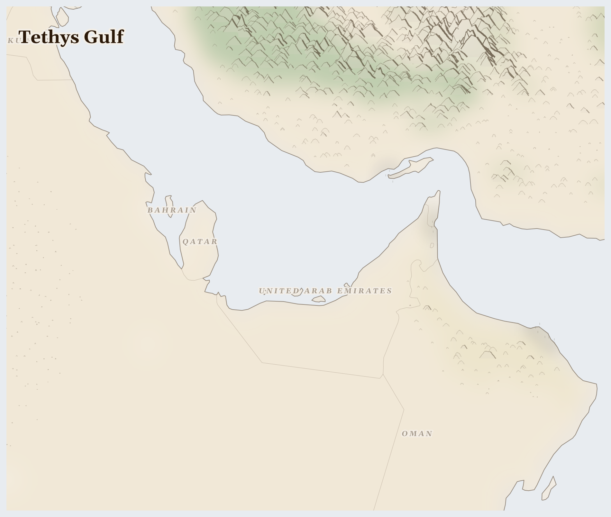

Tethys Gulf
where Tethys reef limestone holds the hydrocarbon that funds the desalination this desert geology never provided
In the hours before dawn, when the temperature in Doha drops below forty degrees, a Nepali man named only by his kafala number walks from the labour camp to the Lusail construction site. He left Kathmandu eighteen months ago, having borrowed $4,000 from a recruitment broker to secure a visa his employer controls. He has not been paid in three months. His wife in Sindhupalchok district receives nothing and borrows from the village moneylender to feed their daughters.
Lives Lived Here
At four in the morning in Al Wakrah, Qatar, a Bangladeshi construction worker queues for the bus to the North Field Expansion site at Ras Laffan, sixty kilometres north. He will spend ten hours welding LNG pipe fittings in conditions that routinely exceed the wet-bulb temperature at which the human body can no longer cool itself. The gas he is helping to pipe will be liquefied at minus 162 degrees, loaded onto Q-Max tankers — the largest LNG carriers ever built — and shipped through the Strait of Hormuz to terminals in Yokohama, Incheon, and Rotterdam. In January, Qatar exported 6.5 million tonnes of LNG. The welder earns 1,500 Qatari riyals a month — about £320 — before the deductions his sponsor takes for accommodation and food in the labour camp. He owes a recruitment agency in Dhaka the equivalent of fourteen months' wages.
In a glass tower in the Dubai International Financial Centre, a fund manager allocates sovereign wealth across global markets. The Abu Dhabi Investment Authority manages over $900 billion — drawn from oil revenue, invested in real estate in London, technology in California, farmland in Australia. The fund manager may drive past the Sonapur labour camp on Sheikh Mohammed bin Zayed Road, where 150,000 workers live in shared rooms twelve to a unit, but the camp is screened from the highway. The connection between the sovereign wealth and the labour camp is not hidden; it simply does not require acknowledgement.
In a kitchen in Manchester, a family turns on the gas hob. The methane that lights the flame may have originated in Qatar's North Field — the same field the Bangladeshi welder is extending. The family pays their energy bill, which includes a wholesale price set partly by Qatari production decisions. They will never know the welder's name. The distance between the hob and the labour camp is not geographical; it is structural. The gas flows because the welder works. The welder works because he cannot leave.
In a kitchen in Manchester, a family turns on the gas hob. The methane that lights the flame may have originated in Qatar's North Field — the same field the Bangladeshi welder is extending. The family pays their energy bill, which includes a wholesale price set partly by Qatari production decisions. They will never know the welder's name. The distance between the hob and the labour camp is not geographical; it is structural. The gas flows because the welder works. The welder works because he cannot leave.

Reference map. Country boundaries and features are approximate.
What Presses
The weight on Tethys Gulf
Ras Laffan, Qatar — Sixty kilometres north of Doha, the world's largest LNG processing facility operates around the clock. Qatar is expanding North Field production from 77 million to 126 million tonnes of LNG per year by 2027. The expansion requires tens of thousands of additional construction workers, recruited under the same kafala system that produced documented deaths during World Cup stadium construction. Nepali workers — roughly 400,000 in Qatar — arrive carrying recruitment debts of $2,000 to $7,000. The reformed labour laws Qatar announced in 2020 have not ended the kafala system; they have renamed parts of it. Workers still cannot leave the country without employer permission in practice. Heat-related deaths are classified as "cardiac arrest" on death certificates, making the true toll uncountable. The families in Kathmandu and Janakpur who sent their sons receive a body and no explanation.
Dubai DMCC Gold Souk — Seventy-five billion dollars in gold passes through Dubai's refining and trading hub annually. Global Witness has traced conflict gold from RSF-controlled mines in Darfur — where farming communities were displaced and miners work under armed guard — through air freight to Dubai, where it enters DMCC-registered refineries (Kaloti, Emirates Gold) and exits as certified bullion for Swiss, Indian, and Chinese markets. The DMCC's due diligence requirements exist on paper. The enforcement gap is the product. Every gold bar that passes through Dubai without rigorous origin verification is a financial instrument that funds the next season of war in Sudan.
Ruwais Industrial Zone, Abu Dhabi — Two hundred kilometres west of Abu Dhabi city, the Ruwais refinery complex processes 900,000 barrels of crude per day. The workers — predominantly Indian and Pakistani — live in company compounds adjacent to the refinery stacks. Respiratory illness rates among refinery-adjacent migrant communities have not been independently studied because access is restricted. The same ADNOC revenue that funds the $900 billion ADIA sovereign wealth fund pays the wages — when they are paid — of the workers who inhale what the refinery emits. The compound is not a neighbourhood; it is a labour deployment site from which workers cannot freely depart.
Six resource streams flow outward from the Gulf — crude oil, LNG, refined petrochemicals, conflict-laundered gold, desalination brine, and remittances earned under duress. What does not flow back is citizenship for the workers who build everything, accountability for the gold that funds wars in Africa, or freshwater to replace what the desalination plants take from a dying sea. The Gulf exports energy to the world and imports the bodies that make it possible. crude oil, refined gold (including conflict-sourced), migrant labour (construction, domestic, services) leaving.
There is no river here. There has never been a river here. Everything that sustains human life in these cities — water, food, the buildings themselves — was brought from somewhere else or manufactured from the ground beneath them. The fifteen million people who do the bringing and the building are also from somewhere else, and they are not invited to remain. The Gulf is a place where the question of who belongs and who serves has been answered with legal precision, and the answer is written into every visa, every labour camp, every glass of desalinated water poured in a hotel lobby by someone who will never be a guest.
For Prayer
Especially for BHR, facing the most severe convergence of crises in this region. For those making impossible decisions about whether to stay or flee, and for those who cannot choose.
For humanitarian workers and missionaries in Tethys Gulf — for their safety, their courage, and their capacity to reach those most in need.
For every act of resistance and care in Tethys Gulf — communities sharing food, farmers saving seed, neighbours sheltering neighbours. That these small acts of defiance outlast the crisis.
Out of the depths have I cried to you, O Lord; Lord, hear my voice; let your ears consider well the voice of my supplication.
Most merciful God, who by the death and resurrection of your Son Jesus Christ delivered and saved the world: grant that by faith in him who suffered on the cross we may triumph in the power of his victory; through Jesus Christ your Son our Lord, who is alive and reigns with you, in the unity of the Holy Spirit, one God, now and for ever.
Amen.
Seeds of Hope
Resistance in the Gulf takes forms that the kafala system is designed to make invisible. In 2022, Bangladeshi workers at a cleaning company in Qatar staged a rare public protest over months of unpaid wages — and were detained, then deported. The protest lasted hours; the deportation was permanent.
For Reflection
How might sitting with this discomfort change how you pray?
What connects your daily life to this crisis?
Looking Ahead
- Qatar's North Field Expansion — from 77 to 126 million tonnes of LNG annually by 2027 — will require sustained recruitment of migrant construction workers under a kafala system that international scrutiny briefly illuminated during the World Cup and has since largely ignored.
- The post-World Cup attention decline is itself a structural feature: the reform announcements satisfied the news cycle without dismantling the sponsorship architecture.
- Gulf summer heat season May-September -- wet-bulb temperatures exceeding human survivability thresholds for outdoor workers under kafala contracts, particularly construction and petrochemical
- FIFA Club World Cup and related infrastructure deadlines in 2025-2026 -- migrant worker conditions on construction projects face renewed scrutiny from international media
- OPEC+ production decisions -- any output increase shifts revenue calculations for states whose labour systems depend on the hydrocarbon surplus
Carry This
What to bring with you from this briefing
Take Action
Organizations working at the nodes this briefing traces
Monitors the kafala sponsorship system across the Gulf states, documenting wage theft, passport confiscation, recruitment debt, and heat-stress deaths among the 15M+ migrant workers who build and maintain Gulf cities.
Directly investigates the kafala labour system the briefing identifies as the hidden metabolism of the Gulf — 15M+ workers from Nepal, India, Bangladesh, Pakistan, and the Philippines structurally bonded to employers, comprising 80-90% of the private workforce.
Investigates conflict resource flows, including the documented pathway of conflict gold from Sudan (RSF-controlled Darfur mines) and Sahel conflict zones through Dubai's DMCC refineries into the formal global market.
Traces the Dubai-DMCC conflict gold corridor the briefing identifies — $75B+/year in gold processing including conflict minerals from African wars, where UAE financial infrastructure is structurally connected to armed group revenue in Sudan and the Sahel.
Campaigns for kafala reform, documents migrant worker deaths and labour violations on construction mega-projects, and pressures Gulf governments on worker protections and freedom of movement.
Advocates for the migrant workers whose labour constructs the built environment the briefing describes — from Dubai's Burj Khalifa to Qatar's Lusail City — under conditions of structural vulnerability to debt bondage, heat exposure, and restricted mobility.
Investigates gold refining supply chains in the UAE and Switzerland, tracing conflict and artisanal gold from Africa through Gulf refineries. Published reports on UAE's role in laundering gold from conflict zones.
Follows the same conflict gold refining circuit the briefing documents — gold from RSF-controlled mines in Darfur entering Dubai-DMCC refineries and emerging as 'clean' gold for European and Asian markets, financing conflict through commodity laundering.
Labour rights organization conducting undercover investigations of working conditions for migrant workers in the Gulf, documenting heat-stress deaths, wage theft, and living conditions in worker camps across UAE, Qatar, and Saudi Arabia.
Documents the lived experience of the labour system the briefing describes — workers from South Asia recruited under kafala, paying $2,000-7,000 in recruitment fees that create debt bondage, labouring in 50°C heat with limited enforcement of midday work bans.
Intergovernmental body monitoring the Persian Gulf marine environment, tracking cumulative impacts of brine discharge from desalination, thermal pollution, oil spills, and coastal development on the world's warmest enclosed sea.
Monitors the Persian Gulf marine ecosystem stress the briefing documents — where brine discharge from all littoral states' desalination accumulates alongside thermal pollution and oil infrastructure, threatening coral, seagrass, and fisheries in the world's shallowest enclosed sea.
Generated 2026-03-18